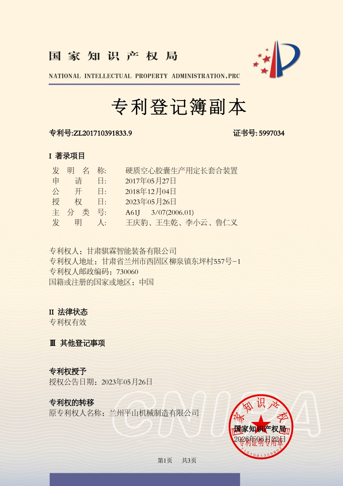
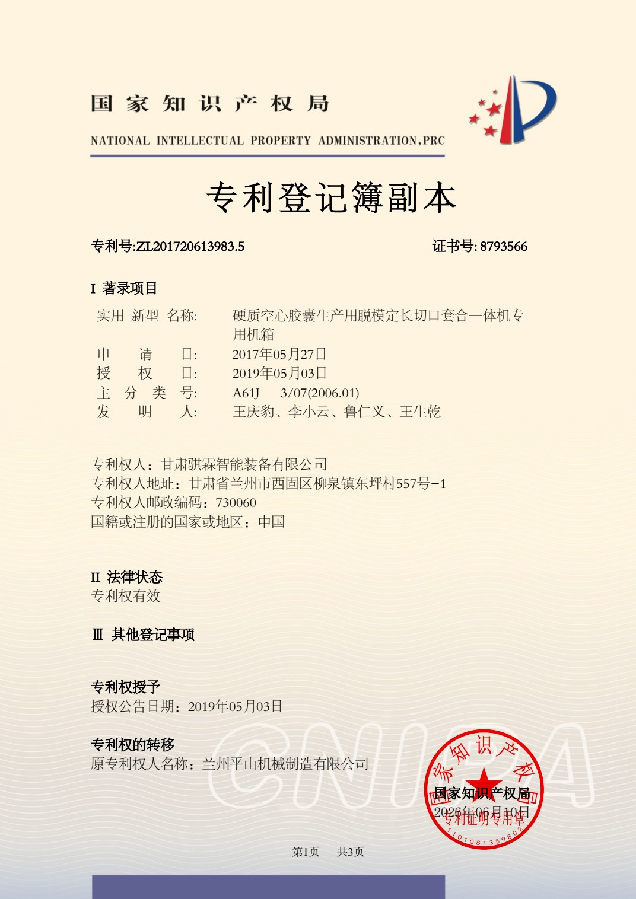
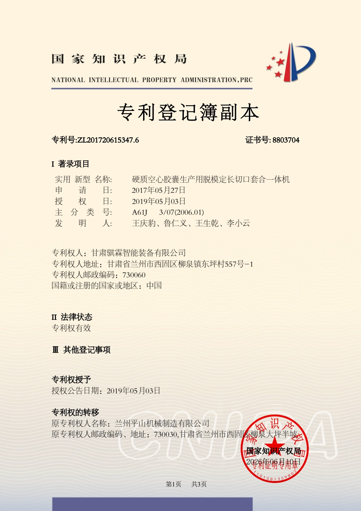
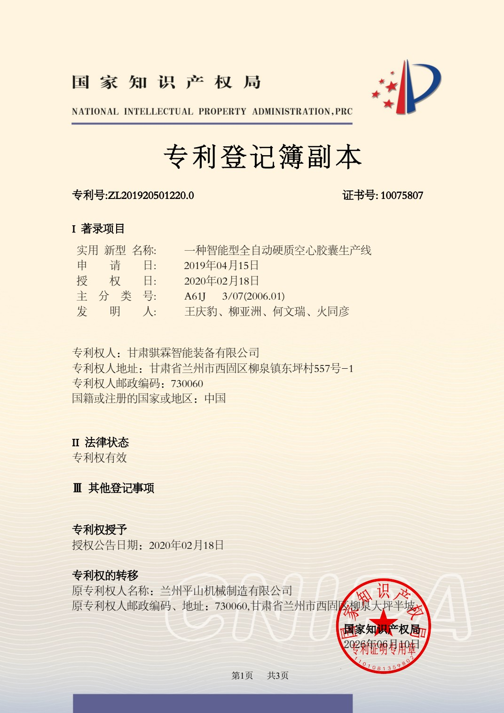

Патент действует
Устройство калибровки длины и соединения твердых пустых капсул
- Патент
- ZL201710391833.9
- Выдан
- 26.05.2023
- Свидетельство
- 5997034
Решения для линий капсул и операций снятия, калибровки, обрезки и соединения.

Патент ZL 2014 2 0122072.9, свидетельство № 4008541. Актуальный статус следует проверять в реестре CNIPA.
Сведения составлены по шести копиям реестра CNIPA. Актуальный правовой статус определяется последней записью реестра.



